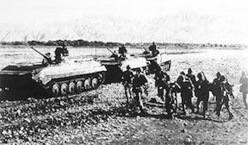
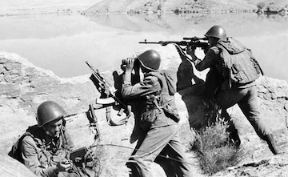

When?
 
The Cold War was a state of geopolitical tension after World War II between powers in the Eastern Bloc (the Soviet Union and its satellite states) and powers in
the Western Bloc (the United States, its NATO
allies and others).
The Olympics came at a difficult time for Soviet–U.S. relations, as they were deep in the Cold War. Only months before the games began, the USSR had invaded Afghanistan, and there was speculation that
the Soviet Union might not be allowed to compete
in these Olympics.
The Soviet Union did compete in the Lake Placid games, but the United States and 65 other nations boycotted the 1980 Summer Olympics in Moscow
later that year.